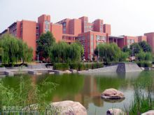

基本信息
- 中文名
- 郑州大学
- 英文名
- Zhengzhou University
- 简 称
- 郑大（ZZU）
- 创办时间
- 1956年
- 类 别
- 公立大学
- 学校类型
- 综合
- 属 性
-
省属重点大学
省部共建大学（2004年）
211工程（1996年）
中西部高校综合实力提升工程（2012年）
卓越工程师教育培养计划（2010年） 展开- 属性
-
省属重点大学
省部共建大学（2004年）
211工程（1996年）
中西部高校综合实力提升工程（2012年）
卓越工程师教育培养计划（2010年）
卓越医生教育培养计划（2012年）
卓越法律人才教育培养计划（2012年） 收起
- 所属地区
- 中国河南郑州
- 现任校长
- 刘炯天
- 知名校友
- 李朝军、张宏江、吉炳轩等
- 主管部门
- 河南省人民政府
- 硕士点
- 55（一级学科） 个
- 博士点
- 21（一级学科） 个
- 博士后流动站
- 24
- 校 训
- 明时风，达治体，文而不弱，武而不暴，蹈厉奋进，竭忠尽智，扶危邦，振贫民
- 专职院士
-
中国科学院院士4
人
中国工程院院士3 人 - 主要院系
- 材料科学与工程学院、医学院、物理工程学院、化学与分子工程学院等
- 国家重点学科
- 2（二级学科，截至2015年12月） 个
- 学校地址
- 河南省郑州市科学大道100号
- 学校代码
- 10459
- 主要奖项
-
中华医学科技奖一等奖（2013年）
中国载人航天突出贡献奖（2007年）
中国高校十大科技进展1项（2004年）
国家级教学成果奖9项（截至2015年12月）
郑州大学建校背景
1952年，中国效法前苏联进行全国高等学校院系调整，拟将
一批沿海及东部地区高校迁往中西部，计划将山东大学
迁到郑州组建新的河南大学，由于种种原因，山东大学未能落户郑州，而是搬回到济南。
郑州大学发展演变
- 郑州大学
1956年4月，山东大学总务长、化学系主任刘椽教授先期赴郑
州考察，得到省、市两级政府的支持，确定在郑州市建设区的菜王、焦家门、蜜蜂张和兑周四个村征地
922亩作为郑大首期建校用地。一年后大学路西侧数、理、化三系的办公教学楼和大学路的东生活区建成
。
1956年8月，报教育部批准，郑州大学作为教育部直属大学，
数理化三系向全国招生，并由原中国科学院院长郭沫若
先生题写了校名。
1958年，经省政府要求，由教育部直属的郑州大学划归河南
省，划归河南省管理后，开始不断进行院系调整。
1958年，增设了政治、历史、中文3个系。

郑州大学
(57张)
1959年，在天津大学、大连理工学院、武汉大学等兄弟院校
的支援下，郑州大学增设了土建、机械、水利和电机4个系。
1960年，增设了外语系。
1961年，原
郑州师范学院并入，郑州师范学院最早可追溯到1902年在开封前营门原游击衙署成立的河南大学堂
中等教育部分以及河南优级师范学堂（后改名开封师范学校）。
1962年，河南省应用物理所并入郑州大学，郑州大学地理系
并入开封师范学院。
1963年，以郑州大学土建、水利、机械、电机四系为基础，
组建郑州工学院。
1991年，黄
河大学并入。
1992年，河南体育专科学校并入。
1996年，郑州大学通过国家“211工程”部门预审，同年6月正式列入国家“211工程”项目院校进行重点
建设。[2]
- 郑州工业大学
1963年，以郑州大学土建、水利、机械、电机四
系为基础，与河南化工学院合并组建国
 原郑州工业大学校门
家化工部直属的重点院校郑州工学院，文革期间曾停办6年。
原郑州工业大学校门
家化工部直属的重点院校郑州工学院，文革期间曾停办6年。
 原郑州工业大学校门
原郑州工业大学校门
1973年，河南农业大学粮油工业系（原郑州粮食学院）并入
郑州工学院。
1978年，郑州工学院粮油工业系析出，复校为郑州粮食学院
，现发展为河南工业大学。
1996年4月，更名为郑州工业大学。
- 河南医科大学
河南医科大学可以追溯到1928年，创建时为国立第五中山大学医科。
1952年10月，全国院系调整，从河南大学分出，更名为河南
医学院，隶属于中央卫生部，是中国27所首批医学博士学位授权单位之一。
1958年秋，河南大学医学院及第一附属医院迁至郑州新址，
其间曾接收郑州康复五院，改称第二附属医院，后又在其旧址成立儿童医院，1962年撤销。
1962年7月，洛阳医学院撤销，一部分师生并入。
1978年，增设预防医学系。
1981年，成为首批拥有博士、硕士学位授予权的教学科研单
位之一。
1983年，增设儿科系。
1984年，定名为河南医科大学。
1985年，增设口腔系。
1990年，增设药学系。
郑州大学合并重组
2007年5月30日，顺利通过教育部本科评估工作，成为教育部
本科评估“优秀”高校。
2010年6月，入选首批国家“卓越工程师教育培养计划”名单高校，首批入选专业为土木工程，第二
批入选专业为机械工程、软件工程。
2011年，郑州大学成为24所中国研究生院院长联席会扩大高
校之一，并正式成立研究生院，翌年本科生免试推
荐硕士研究生比例达到15%。
郑州大学办学条件
编辑郑州大学院系专业
| 二级学院/直 属系 | 开设专业 |
|---|---|
| 郑州大学数学与统计学院 | 数学与应用数学、信息与计算科学、统计学、金融数学 |
| 郑州大学化学与分子工程学院 | 化 学、应用化学 |
| 郑州大学物理工程学院 | 物理学、 应用物理学 、测控技术与仪器、电子科学与技术、电子信息科学与技术 |
| 郑州大学 信息工程学院 | 电子信息工程 、通信工程、计算机科学与技术 、软件工程 |
| 郑州大学电气工程学院 | 自动化、 电气工程及其自动化 、生物医学工程 |
| 郑州大学材料科学与工程学院 | 材料科学与工程、材料化学、包装工程、材料科学与工程（ 中日合办） |
| 郑州大学机械工程学院 | 工业设计、 机械工程及自动化 、机械设计制造及其自动化 |
| 郑州大学土木工程学院 | 土木工程、建筑环境与能源应用工程、交通工程、城市地下空间工程 |
| 郑州大学水利与环境学院 | 水利水 电工程、环境工程、给水排水工程、地理信息系统、水文与水资源工程、道路桥梁与渡河工程 |
| 郑州大学化工与能源学院 | 化学工 程与工艺、制药工程、过程装备与控制工程 、热能与动力工程、环境科学、安全工程 |
| 郑州大学建筑学院 | 建筑学、城乡规划学、风景园林学、艺术设计（环境艺术设计方向） |
| 郑州大学管理工程学院 | 工业工程、工程管理、电子商务、物流管理 |
| 郑州大学力学与工程科学学院 | 工程力学、安全工程 |
| 郑州大学生命科学学院 | 生物技术、生物工程、生物信息 |
| 郑州大学商学院 | 工商管理、经济学、国际经济与贸易、金融学、统计学 、会计学 |
| 郑州大学旅游管理学院 | 旅游管理、市场营销、音乐表演（空乘方向）、酒店管理 |
| 郑州大学公共管理学院 | 哲学、社会工作、行政管理、公共事业管理 |
| 郑州大学法学院 | 法学 |
| 郑州大学文学院 | 汉语言文学、对外汉语 |
| 郑州大学新闻与传播学院 | 新闻学、广告学、广播电视新闻学（播音与主持艺术方向） |
| 郑州大学外语学院 | 英语、日语、俄语、德语 |
| 郑州大学 马克思主义学院 | 思想政治教育学 |
| 郑州大学教育系 | 教育学、应用心理学 |
| 郑州大学历 史学院 | 考古学、历史学 |
| 郑州大学信息管理学院 | 信息管理与信息系统、图书馆学、档案学 |
| 郑州大学体育学院（校本部） | 体育教育 |
| 郑州大学音乐学院 | 音乐表演、音乐学 |
| 郑州大学美术学院 | 绘画、艺术设计、雕塑、书法 |
| 郑州大学基 础医学院 | 基础医学 |
| 郑州大 学临床医学系 | 临床医学（五年制）、 临床医学（七年制）、医学影像学 、麻醉学 |
| 郑州大学医学检验系 | 医学检验 |
| 郑州大学公共卫生学院 | 预防医学 |
| 郑州大学护理学院 | 护理学 |
| 郑州大学药学院 | 药学、药物制剂 |
| 郑州大学第一临床学院 | / |
| 郑州大学第二临床学院 | / |
| 郑州大学第三临床学院 | / |
| 郑州大学第五临床学院 | / |
| 郑州大学口腔医学院 | / |
| 郑州大学软件与应用科技学院 | 计算机科学与技术、软件工程 |
| 郑州大学远 程教育学院 | / |
| 郑州大学继续教育学院 | / |
| 郑州大学国际教育学院 | / |
| 郑州大学国际学院 | / |
| 郑州大学体育学院（中外合作） | / |
| 郑州大学西亚斯国际学院（中外合作） | / |
| 参考资料：[6-8] [9] | |
郑州大学师资力量
截至2016年4月，郑州大学共有4位中国科学院院士（专职），3位中国工程院院士（专职）；有国家“千人计划”入选者5人、“长江学者
奖励计划”特聘教授2人、“国家杰出青年科学基金”获得者7人、国家级教学名师5人、河南省“中原学
者”9人，并有国家级教学团队4个。[1]
国家级教学名师（5人，不全）：李梦如、师黎、魏
新利、关绍康
| 姓名 | 学术称号 | 所在学部 | 备注 |
|---|---|---|---|
中国科学院院士
|
技术科学部
|
双聘、天津大学教授
| |
中国科学院院士、
俄罗斯国际科学院院士
|
化学部
|
双聘、厦门大学教授
| |
中国工程院院士
|
医药卫生学部
|
双聘、北京协和医学院教授
| |
中国科学院院士
|
生命科学和医学学部
|
双聘、中国医学科学院研究员
| |
中国科学院院士
|
生命科学和医学学部
|
双聘、中国农业大学教授
| |
中国科学院院士
|
技术科学部
|
双聘、大连理工大学教授
| |
中国工程院院士
|
土木、水利、建筑学部
|
双聘、中科院数学与系统科学研究院研究员
| |
中国科学院院士
|
数学物理学部
|
双聘、中科院计算数学与科学工程研究所所长
| |
中国工程院院士
|
土木、水利、建筑学部
|
双聘、大连理工大学教授
| |
中国工程院院士
|
医药卫生学部
|
双聘、上海交通大学教授
| |
中国工程院院士
|
医药卫生学部
|
双聘、中国医学科学院研究员
| |
中国科学院院士
|
化学部
|
双聘、中石化（洛阳）公司技术委员会主任
| |
| 钱旭红 | 中国 工程院院士 | 化工、冶金与材料科学部 | 双聘、华东理工大学校长 |
| 王光远 | 中国工程院院士 | 土木、水 利、建筑学部 | 双聘、哈尔滨工业大学教授 |
| 张改平 | 中国 工程院院士 | 农业学部 | 双聘、河南农业大学校长 |
| 李朝军 | 加拿大皇家科学院院士 | 全球绿色化学专家 | 双聘、加拿大皇家科学院 |
| 施一公 | 中国科学院
院士、
美国科学院外籍院士
| 生命科学和医学学部 | 双聘、清华大学教授 |
| 丁奎岭 | 中国科学院院士 | 化学部 | 双 聘、中国科学院上海有机化学研究所所长 |
| 聂建国 | 中国工程院院士 | 土木、水利与建筑学部 | 双 聘、清华大学教授 |
| 尼克·莱蒙 | 英国医学科学院院士 | 双聘、英国玛丽女王伦敦大学癌症研究所所长 | |
| 陈君石 | 中国工程院院士 | 营养和食品安全专家 | 双聘、中国疾病预防控制中心营养与食品安全所研究员 |
| 詹启敏 | 中国工程院院士 | 双聘、中国医学科学院副院长 | |
| 埃里克·弗斯贝格 | 瑞典皇家工程科学院院士、
美国国家工程院院士
| 双聘、国际矿物加工委员会主席 | |
| 参考资料：[15-16] | |||
郑州大学学科建设
截至2015年12月，郑州大学共有国家重点学科2个，国家重点
（培育）学科4个，第八批一级学科河南省重点学科46个，第八批二级学科河南省重点学科4个，21个一
级学科博士点、3个独立设置的二级学科博士点、55个一级学科硕士点；1个博士专业学位授权点、21个
硕士专业学位授权点、24个博士后科研流动站。[1]
- 重点学科
| 序号 | 一级学科名称 | 一级代码 | 学科门类 | 级别 |
|---|---|---|---|---|
1
| 应
用经济学
| 0202
|
经济学
|
省一级重点学科
|
2
| 法
学
| 0301
|
法学
|
省一级重点学科
|
3
| 马
克思主义理论
| 0305
|
法学
|
省一级重点学科
|
4
| 体
育学
| 0403
|
教育学
|
省一级重点学科
|
5
| 中
国语言文学
| 0501
|
文学
|
省一级重点学科
|
6
| 外
国语言文学
| 0502
|
文学
|
省一级重点学科
|
7
| 新
闻传播学
| 0503
|
文学
|
省一级重点学科
|
8
| 考
古学
| 0601
|
历史学
|
省一级重点学科
|
9
| 中
国史
| 0602
|
历史学
|
省一级重点学科
|
10
| 世
界史
| 0603
|
历史学
|
省一级重点学科
|
11
| 数
学
| 0701
|
理学
|
省一级重点学科
|
12
| 物
理学
| 0702
|
理学
|
省一级重点学科
|
13
| 化
学
| 0703
|
理学
|
省一级重点学科
|
14
| 生
物学
| 0710
|
理学
|
省一级重点学科
|
15
| 生
态学
| 0713
|
理学
|
省一级重点学科
|
16
| 统
计学
| 0714
|
理学
|
省一级重点学科
|
17
| 力
学
| 0801
|
工学
|
省一级重点学科
|
18
| 机
械工程
| 0802
|
工学
|
省一级重点学科
|
19
| 光
学工程
| 0803
|
工学
|
省一级重点学科
|
20
| 材
料科学与工程
| 0805
|
工学
|
省一级重点学科
|
21
| 动
力工程及工程热物理
| 0807
|
工学
|
省一级重点学科
|
22
| 电
气工程
| 0808
|
工学
|
省一级重点学科
|
23
| 电
子科学与技术
| 0809
|
工学
|
省一级重点学科
|
24
| 信
息与通信工程
| 0810
|
工学
|
省一级重点学科
|
25
| 控
制科学与工程
| 0811
|
工学
|
省一级重点学科
|
26
| 计
算机科学与技术
| 0812
|
工学
|
省一级重点学科
|
27
| 建
筑学
| 0813
|
工学
|
省一级重点学科
|
28
| 土
木工程
| 0814
|
工学
|
省一级重点学科
|
29
| 水
利工程
| 0815
|
工学
|
省一级重点学科
|
30
| 化
学工程与技术
| 0817
|
工学
|
省一级重点学科
|
31
| 交
通运输工程
| 0823
|
工学
|
省一级重点学科
|
32
| 核
科学与技术
| 0827
|
工学
|
省一级重点学科
|
33
| 环
境科学与工程
| 0830
|
工学
|
省一级重点学科
|
34
| 城
乡规划学
| 0833
|
工学
|
省一级重点学科
|
35
| 软
件工程
| 0835
|
工学
|
省一级重点学科
|
36
| 安
全科学与工程
| 0837
|
工学
|
省一级重点学科
|
37
| 基
础医学
| 1001
|
医学
|
省一级重点学科
|
38
| 临
床医学
| 1002
|
医学
|
省一级重点学科
|
39
| 口
腔医学
| 1003
|
医学
|
省一级重点学科
|
40
| 公
共卫生与预防医学
| 1004
|
医学
|
省一级重点学科
|
41
| 药
学
| 1007
|
医学
|
省一级重点学科
|
42
| 护
理学
| 1011
|
医学
|
省一级重点学科
|
43
| 管
理科学与工程
| 1201
|
管理学
|
省一级重点学科
|
44
| 公
共管理学
| 1204
|
管理学
|
省一级重点学科
|
45
| 图
书情报与档案管理
| 1205
|
管理学
|
省一级重点学科
|
46
| 音
乐与舞蹈学
| 1302
|
艺术学
|
省一级重点学科
|
47
|
基础心理学
| 040201
|
教育学
|
省二级重点学科
|
48
| 地
图制图学与地理信息工程
| 081603
|
工学
|
省二级重点学科
|
49
| 皮
革化学与工程
| 082204
|
工学
|
省二级重点学科
|
50
| 作
物遗传育种
| 090102
|
农学
|
省二级重点学科
|
- 学科排名
截至2015年12月，郑州大学共有化学、临床医学
、材料科学、工程4个学科（领域）ESI
排名进入全球前1%。[1]
- 学位点
博士后科研
流动站
| 基
础医学
|
临床医学
|
公共卫生与预防医学
|
药学
|
护理学
|
化学
|
数学
|
物理学
| |
中国语言文学
|
世界史
|
考古学
|
中国史
| |
法学
|
马克思主义理论
|
材料科学工程
|
土木工程
| |
化学工程与技术
|
水利工程
|
力学
|
信息与通信工程
| |
控制科学工程
|
动力工程及工程热物理
|
软件工程
| 公共管理 |
郑州大学教学建设
- 质量工程
截至2015年12月，郑州大学共有国家级特色专业
14个、国家级实验教学示范中心4个、国家级虚拟仿真实验教学示范中心1个、国家级本科专业综合改革
试点项目6个、全国专业学位教育综合改革试点类别3个、国家级人才培养模式创新实验区2个、国家级工
程实践教学中心7个、国家理科基础科学研究和教学人才培养基地1个、国家大学生文化素质教育基地1个
、国家级精品课程14门、国家级双语教学示范课程2门、国家级精品视频公开课4门、国家级精品资源共
享课14门。[1]
截至2015年12月，郑州大学共先后获国家级教学成果奖9项
[1]
。2013年，获省教学成果特等奖2项，一等奖8项；获全国“挑战杯”总决赛一等奖1项、二等奖1项；全
国数学建模竞赛一等奖2项、二等奖5项；全国大学生电
子设计竞赛全国一等奖1项、二等奖5项；中国机器
人大赛冠军4项、亚军3项。
国家特色专业（14个）：物理学、化学、预防医学、
工程力学、水利工程、化学工程与工艺、材料科学工程、通信工程、新闻学、法学、历史学、行政管理
、旅游管理、金融学
国家级工程实践教学中心
（7个）：
河南省第五建筑安装工程（集
团）有限公司、林州建总建筑工程有限公司、卫华集团有限公司、新蒲建设集团有限公司、郑州宇通客
车股份有限公司、中国一拖集团有限公司、中铁隧道装备制造有限公司
[28]
- 教学模式
郑州大学实施“平台+模块+课程群”的课程体系，双学位、双专业、辅修的专业培养模式；与中
国科学院合作共建“卢嘉锡化学菁英班”，由中科院化学研究所牵头，协同大连化学物理研究所、长春
应用化学研究所、理化技术研究所、成都有机化学研究所，与学校联合共建，共建单位将共同参与“卢
嘉锡化学菁英班”的学生管理、课程设置、科研实践等的全部培养过程。[37-38]
郑州大学对外交流
- 校际合作
截至2014年9月，郑州大学先后与北京大学、清华
大学、中国科学院等20余家中国大陆高校、科研院所建立了合作关系，与美国、英国、法国、日本、俄
罗斯、加拿大、澳大利亚、韩国、哈萨克斯坦、白俄罗斯、芬兰、乌克兰等国家和中国香港、中国台湾
等40多个国家和地区的170余所知名高校建立了校际合作关系。[10]
- 校地合作
郑州大学与郑州高新区和相关高校合作建立了河南省国家大学科技园；与200余家知名企业和地方政府建立了校企、
校市合作关系；建设了包括“中英联合分子肿瘤学研究中心”、“国际磷化学实验室”、“中法有机磷
功能材料国际联合实验室”、“中美帕金森病研究和治疗中心”等一批中外联合实验室和研究中心。
郑州大学学术研究
编辑郑州大学科研机构
据2015年12月学校官网信息显示，郑州大学共有各级、各类
科研机构169个，其中有1个国家工程研究中心，1个国家技术研究推广中心，1个国家工程技术研究中心
，2个国家药品临床研究基地，2个教育部重点实验室，2个国家药品临床研究基地，2个教育部工程研究
中心，9个省级重点实验室，2个省级工程技术研究中心，8个河南省高校重点学科开放实验室，1个河南
省实验动物中心，1个省部共建人文社科重点研究基地，1个河南省重点社会科学研究基地，9个河南省高
校人文社会科学重点研究基地。[4]
郑州大学科研成果
据2015年12月学校官网信息显示，郑州大学在近年来共承担
各级各类科研项目9000多项，其中国家科技攻关、863、973、国家自然科学基金、国家社会科学基金、国家杰出青年基金等国家级项目160余项，教育部
留学归国人员基金、教育部科技攻关、河南省重大科技攻关、河南省杰出人才创新基金等省（部）级重
点项目400多项，获科研经费近2亿元，产出科研成果8500余项，其中700多项成果通过国家和省（部）级
鉴定，800多项成果获厅（局）级以上科研奖励，589项成果获国家级和省（部）级科研奖励。[4]
“十一五”期间，郑州大学争取到的科研经费达12亿元，承
担国家科技支撑计划、“973”、“863”、国家自然科学基金、社科基金等国家级项目425项，横向科研
项目1316项目，获得国家级奖励4项，在国际知名期刊Science和Nature上发表文章5篇，2005年被SCI收
录论文位居全国高校第28位，被EI收录论文138篇，发表SCI和EI文章3330篇，申请发明专利698项，与企
业签订合同1400份，获得成果转化费4亿多元。全校教师共发表论文1万多篇，出版著作900多部，被SCI
收录论文数居全国高校第39位，被EI收录论文数居全国高校第55位。[4]
- 重大成果举例
申长雨：主持完成的“橡塑制品成型模具设计中
的关键力学问题和计算方法”获国家科技进步二等奖。
申长雨：2007年因研制出特殊环境下的高抗冲击性、防辐
射和高光谱透过率的宇航员出仓面窗制品获“中国载人航天工程突出贡献”奖励。
核心教学区
(2张)
刘敏珊、董其伍：主持完成的“新型高效纵流壳程换热设备
现代设计技术研究与应用”获国家科技进步二等奖。
高丹盈：申报的《钢纤维混凝土特定结构计算理论和关键技
术的研究与应用》成果获2010年度国家科技进步二等奖。
刘炯天：主持完成的《多流态梯级强化浮选技术开发及应用
》项目获国家科学技术进步二等奖。
郑州大学学术资源
- 馆藏资源

图书馆
(2张)
- 学术期刊
《郑州大学学报（哲学与社会科学版）》
创刊于1960年，为社会科学和人文科学综合性学术期刊。主要刊发哲学、政治学、法学、经济学、社会
学、史学、图书情报学、文学、语言学、新闻学等方面的学术性文章，设有“人学研究”、“环境资源
法研究”、“书简学研究”、“中国现当代文学研究”等栏目。为全国中文核心期刊，中国人文社会科
学核心期刊，“中国社会科学引文索引（CSSCI）”来源期刊，中国期刊方阵双效期刊。[44]
《郑州大学学报（医学版）》是由河南省教育厅主管
、郑州大学主办的综合性医药卫生类学术期刊，创刊于1957年，设有“特约述评”、“食管癌研究”、
“系列研究”、“论著”、“应用研究”和“研究快报”等栏目，入选《中文核心期刊要目总览》，为
中文核心期刊、中国科技核心期刊和中国科学引文数据库来源期刊，进入中国生物医学文献数据库
（CBMdisc）、中国生物医学期刊文献数据库（CMCC）、中国科技论文统计与引文分析数据库（CSTPCD）
、中文科技期刊数据（CSTJ）、万方数字化期刊全文数据库、中国学术期刊（光盘版）全文数据库等多
种重要数据库，被美国化学文摘、哥白尼索引等多种权威性文摘期刊摘录。[45]
《郑州
大学学报（理学版）》创刊于1962年，原刊名为《郑州大学学报》（自然科学版），为自然科
学类综合性学术期刊，全国中文核心期刊，RCCSE中国核心学术期刊，主要刊登理、工科基础研究、应用
研究及综合评述方面的学术论文；被中国科技信息研究所“万方数据系统”和《中国学术期刊》（光盘
版）全文收录，并被美国《数学评论》、美国《化学文摘》、德国《数学文摘》、俄罗斯《文摘杂志》
和波兰《哥白尼索引（IC）》等国际性文摘杂志收录或评论。[46]
《郑州大学学报（工学版）》创刊于1980年，原名《
郑州工业大学学报》，是郑州大学主办的综合性学术期刊，双月刊，该刊是中文核心期刊、中国科技核
心期刊、RCCSE中国核心学术期刊和《中国科学引文数据库》来源期刊，主要刊登工学各学科基础理论、
应用科学及工程技术的最新研究成果，已经被美国《化学文摘》、《数学评论》、《剑桥科学文摘》、
俄罗斯《文摘杂志》、波兰《哥白尼索引》、英国《科学文摘》等重要数据库和文摘固定收录。
[47]
《
磷肥与复肥》创刊于1985年，由郑州大学与中国磷肥工业协会主办，是中国科技核心期
刊，是国家新闻出版广电总局首批认定学术期刊，被美国化学文摘（CA）摘录。[48]
《美与时
代》是由郑州大学主管、河南美学学会和郑大美学研究所主办的美学和艺术学学术期刊，被出
版署列为“双效期刊”，进入中国“期刊方阵”（骨干期刊）。
郑州大学文化传统
编辑郑州大学形象标识
- 校徽
郑州大学校徽由“Z”、“大“、”人“和山峰共
同构成，又形象英文第一个字母“A”，顶天立地的巨人形象，蕴函人杰地灵、人才辈出之意，象征郑州大学培养出的栋
梁之材，山峰象征学子勇攀高峰的进取精神，第一个字母“A”代表永争第一。[49]
- 校旗
郑州大学精神文化
- 校训
所谓“明时风”，就是洞悉天下大势，把握社会发展潮流；
所谓“达治体”，是指要有全局眼光，从整个统治利益出发
的考虑问题。
蹈厉奋进，竭忠尽智，扶危邦，振贫民，就是最大可能发挥
个人对国家人民的智慧和忠诚，扶危济困。
- 三 风
校风：笃信仁厚，慎思勤勉
教风：博学明德，求实善教
郑州大学学校领导
编辑郑州大学现任领导
| 职务 | 姓名 |
|---|---|
党委书记
| |
校长
| |
副校
长
| |
| 参考资料： [52] | |
郑州大学历任校长
樊道远
（1979年—1983年）曾任河南日报社副总编辑、河南省出版局副局长、郑州大学校长和河南省顾问委员
会委员等职。
车得基
（1983年—1994年）化学专家，中共河南省第四届委员会委员，省管优秀专家，国务院批准享受政府特
殊津贴专家。
曹策问（
1994年—2002年9月）政协河南省第九届委员会副主席，第六、七、八、九、十届全国人大代表，北京大
学、南京大学等校兼职教授。
郑州大学知名校友
编辑郑州大学科教界
戴程鹏——现任美国Tennesse大学教授，获得全球优秀青年
科学家奖。
 校园景色--眉湖
校园景色--眉湖
丁奎岭
——中国科学院院士，中国科学院上海有机化学研究所所长。
秦元勋—
—近现代数学家、两院院士、两弹功勋科学家，原黄河大学校长。
霍秉权—
—物理学家、教育家，中国首批研究宇宙射线、高能物理和核物理研究的杰出物理学家之一。
嵇文甫—
—中国科学院学部委员，当代著名的教育家、史学家、哲学家。
申长雨—
—现任国家知识产权局局长，中国科学院院士，国家杰出青年，973项目首席科学家。
孙国梁——近代土木工程学家，中国钢—混凝土组合结构领
域创始人、奠基人之一。
聂建国—
—中国工程院院士，清华大学土木工程系教授，教育部长江学者特聘教授。
吴养洁—
—中国科学院院士、郑州大学教授，河南省高等学校应用化学重点开放实验室主任。
王楠林—
—美国物理学会会士，中科院“百人计划”获得者，中科院物理研究所极端条件物理重点实验室主任。
李彬——清华大学新闻与传播学院副院长，教育部新闻学学
科教学指导委员会委员。
李庆斌——清华大学水电系教授，曾获教育部教育部科技进
步一等奖。
万有—
—北京大学医学部基础医学院副院长、教育部和卫生部神经科学重点实验室主任。
雷兴山
——北京大学考古文博学院党委副书记，著名夏商周考古学家
吴潜涛
——中国人民大学哲学院党委书记，马克思主义理论研究与建设工程思想道德修养与法律基础教材编
写课题组首席专家。
张涛——北京航空航天大学的博士生导师、材料学院院长，
教育部“长江学者”特聘教授。
马建标
——天津理工大学党委书记，曾任吸附分离功能高分子材料国家重点实验室主任。
刘笑盈
——中国传媒大学传播研究院国际新闻研究所所长
，教授，博士生导师。
周鸿铎
——中国传媒大学传媒经济研究所所长、网络经济研究所所长，是中国研究传媒经济最早的学者之一。
陈耀——中国社会科学院西部发展研究中心副主任、秘书长
；中国区域经济学会常务理事、副秘书长。
张友坤——现任中国社会科学院民族研究所书记、副所长、
研究员，兼任张学良暨东北军研究会副会长。
潘知常
——美学家，南京大学新闻传播学院教授、博士生导师，南京大学传媒发展研究中心主任。
刘怀玉——南京大学哲学系教授，研究生导师，南京大学马
克思主义社会理论研究中心教授。
刘培德——武汉大学数学研究所所长，全国泛函分析空间理论组召集人。
靳德时——教授级高工，一级注册建筑师，曾任北京城市开
发设计研究院（甲级）院长兼总建筑师。
杨培增
——重庆医科大学附属第一医院副院长、教育部长江学者特聘教授、国家杰出青年基金获得者
车得基
——郑州大学教授、国内著名化学专家，曾任郑州大学校长。
常俊标
——郑州大学副校长、河南省化学会副理事长，中国科学技术大学、天津大学兼职教授。
宋毛平—
—郑州大学副校长，河南省高校应用化学重点实验室主任、教育部化学教学指导分委员会副主任、河南
省化学会副理事长。
阎锡蕴——中国科学院“百人计划”入选者，中国科学院生
物物理研究所研究员，生物大分子国家重点实验室副主任。
黎占亭
——上海有机所研究员、物理有机研究室主任、课题组长，国家杰出青年基金获得者、入选国家人事部
“新世纪百千万人才工程”国家级人选。
宋延林——中国科学院化学研究所新材料实验室主任、国家杰出青年科学基金获得者。
张玮——
美国外科学院院士，美国华盛顿州维基尼亚梅森医学中心外科博士。
韩新强——美国心脏病学院院士，曾获得美国心脏学会76届
研讨会优秀科研奖，在美国印第安纳州瑞德医院任教
授。
陈永胜—
—美国加利福尼亚州立大学国家实验室高级研究员。南开大学特聘教授，纳米科学与技术研究中心主任
。
赵保佑
——河南省社会科学院正院级干部、研究员、中国社科信息学会常务理事。
李维明——现任中国国家博物馆研究馆员，中国殷商文化学
会理事。
阚全程
——郑州大学副校长，郑州大学第一附属医院院长。
马保根
——河南省人民医院院长，全国卫生系统先进工作者。
张秉义——河南大学党委书记。
刘鹏——河南农业大学党委书记。
朱海风
——华北水利水电大学党委书记。
张元——河南工业大学校长。
邢莹——新乡医学院党委书记。
卫世文——河南财经政法大学副校长。
张国臣——河南理工大学党委副书记。
宁金成—
—河南政法干部管理学院院长。
李少兰
——河南农业大学党委副书记。
窦效民
——郑州轻工业学院党委副书记。
郭正让——中原工学院党委副书记。
胡大白—
—黄河科技大学校长。
郑州大学党政界
吉炳轩—
—全国人大常委会副委员长，黑龙江省委书记，黑龙江省人大常委会主任。
宋照肃—
—原甘肃省委书记，现任第十届全国人大环境与资源保护委员会副主任委员。
南振中—
—原新华社总编辑，全国新闻工作者协会副主席，现任全国人大外事委员会副主任。
陈全国—
—西藏自治区党委委员、常委、书记。[57]
姜建初—
—最高人民检察院副检察长，二级大检察官、第十二届全国政协委员会常务委员。
徐明阳—
—原西藏自治区委常务副书记、自治区常务副主席。
刘俊臣——国家工商行政管理总局党组成员、副局长。
张文彬——原国家文物局局长、党组书记，现中国博物馆学
会会长。
宋璇涛——中共中央纪律检查委员会委员。现
任贵州省委常委、省纪委书记。
安东——
陕西省委常委，政法委书记。
郭迎光—
—山西省副省长。
王铁——
河南省副省长。
李亚——河南省副省长。
黄海嵩—
—安徽省副省长。
李晓鹏
——原中国工商银行总行副行长，现任中国投资有限责任公司监事长。
王田海
——云南省人民检察院检察长、党组书记。
万永祥—
—曾任外交部纪律检查委员会书记、中央保密委员会委员，现任中国人民外交学会党组书记、副会长。
[57]
王金龙——中央党校信息管理部副主任。
史卫忠——最高人民检察院公诉厅起诉一处处长。
张宏喜
——曾任中国驻纽约大使衔总领事，全国政协委员。
刘贵祥
——最高人民法院执行局局长、二级高级法官。
刘曙光——国家文物局办公室主任、外事联络司司长。
苏茂林——水利部黄河水利委员会副主任，党组成员。
石春先——曾任黄河水利委员会副主任，国务院南水北调中
线管理局常务副局长。
蒋笃运—
—河南省十二届人大常委会副主任。
王文超——河南省人大常委会副主任、党组副书记。
李新民——河南省人大常委会党组副书记、副主任。
舒葳韧——贵州省人民政府法制办公室副主任、党组成员，
原贵州大学副校长、校党委常委。
李勤德——广州市政协副主席、民革广州市委员会主委。
袁家新
——河南省军区司令员。
余保江
——河南省政协秘书长。
赵中社
——海南省海洋与渔业厅厅长。
王照平—
—河南省林业厅厅长。
王建武—
—河南省水利厅副厅长。
苏福功—
—河南省信息产业厅厅长。
朱长青——河南省食品药品监督局党组书记、局长。
郭锦洲——河南省银行业监督管理局局长。
李庚香
——河南省委宣传部副部长。
申振君—
—河南省国资委党委书记。
朱学庆——广西梧州市委副书记，市人民政府市长、党组书
记。原共青团中央常委，中央国家机关团工委书记。
丁巍——安阳市委书记。
李亚——
许昌市委书记。
黄兴维—
—南阳市委书记。
赵中社
——原海南省儋州市委书记。
郭洪昌
——河南省政府秘书长，原洛阳市市长。
梁铁虎—
—濮阳市市长。
化有勋—
—驻马店市市长
乔新江
——信阳市市长。
曹存正
——漯河市市长。
黄兴维——原
南阳市委书记，原河南省政协社会和法制委员会主任。
在郑省直属机关的郑州大学校友中有正厅级干部500余人，副
厅级干部1800余人，副高以上职称600余人。
郑州大学工商界
徐明阳—
—中国通用技术（集团）控股有限责任公司董事、
副总经理、党组成员。
魏克亮——恒大地产集团副总裁
王莎莉
——现任中国石油天然气勘探开发公司高级副总经理，同时兼任该公司总法律顾问。
鲍臣礼
——计算机技术艺术家，软件开发测试专家，微软西雅图总部的高级开发测试工程师。
陈向东—
—北京新东方教育科技集团执行总裁。
孙工声
——中国人民银行南京分行行长、国家外汇管理局江苏省分局局长。
焦瑾璞
——中国人民银行研究局副局长，中国人民银行金融研究所博士后科研流动站负责人。
蔡治建——中
国工商银行青岛市分行行长。
王礼平
——甘肃省农村信用社联合社主任。
杨伟强—
—TCL信息产业集团副总经理，TCL电脑科技有限责任公司总经理。
胡葆森—
—河南建业集团董事长，入选中国富豪排行榜。
刘杰——
国际著名反病毒专家，金山集团技术顾问，北京日月光华软件有限责任公司董事长兼总经理。
王献冰——国内知名网络安全专家。
韩家玮——世界数据库专家。
何公道——高级系统分析员，国际著名反病毒专家，江民科
技技术研发中心总经理。
宁红涛——原金发科技股份有限公司党委副书记、副总经理
；现广东金发（循环经济产业园）董事长
侯伟—
—福建榕基软件股份有限公司副董事长、常务副总裁。
郭戈平
——中国连锁经营协会会长。
李伟——思念食品集团董事长，入选中国富豪排行榜。
李长杰—
—全国人大代表，金龙精密铜管集团股份有限公司董事长、总裁。
李海峰——陶瓷艺术大师，金堂钧窑有限公司总经理。
张松山
——华邦制药董事长。
邹源——民营企业家、岳华会计师事务所董事长。
皇甫立志
——大商集团郑州地区集团总裁。
李亚平—
—东方网神的作者，VTTE超级可视磁盘刊物生成器。
赵长升
——河南金鹏实业有限公司董事长、中国大学生创业网总裁。
王勇——中联信融北京企业管理顾问有限公司董事长。
李爱君
——深圳航空城董事长，2003年度深圳地产风云人物，桃源居公益事业发展基金会创始人。
郑州大学传媒界
南振中—
—原新华社总编辑，全国新闻工作者协会副主席。
王保纯——光明日报总编室常务副主任、高级编辑。
解国记
——《新华每日电讯》总编辑、中国十大报业创新领军人物。
郭曰方—
—中国科学报社总编辑，中国科学院机关党委书记，中科院文联主席
贾文皋——河南广播电视报社总编。
段传敏
——现任南方企业家杂志社总策划兼主编、中国营销资源在线董事长。
周绍成
——原河南电视台台长。
冯冠军
——郑州电视台台长。
左光瀚——东
方今报社长。
黄十庆——人民日报社理论部副主任
李长虹——人民日报评论员，高级编辑
张宗堂——新华社国内部记者。随中国第22次南极考察队赴
南极采访报道，考察结束后，被评为“优秀南极考察队员”。
谢登科
——新华社中央新闻采访中心高级记者、经济采访室副主任。
张晓华—
—新华社浙江分社社长。
陈思禹——新华社宁夏分社社长。著名摄影家。
郅振璞
——人民日报青海分社社长。
庞新智——大河报总编辑。
仇勇——现供职于《中国新时代》杂志，副主编。
李颖生
——《销售与市场》杂志社社长。
刘德璋—
—河南漫画研究会会长。
何向阳——河南女作家、文学批评家，河南省社会科学院文学所副所长，研究员。
孙甜甜—
—中国国家队网球队员，网球世界冠军。雅典奥运会上女双金牌。
贾占波—
—雅典奥运会中射击男子3×40金牌得主。
李雪英——2012伦敦奥运会58公斤级举重冠军。
陈薇薇
——首届英雄联盟中国区冠军。
郭秋霞
——中国厨王。
郑华俤
——歌手，演员
游捷
——第八届《中国魅力型男》冠军。
陈星——
中国思乡文化流行歌手
陈枭——演员
李东学
——演员
- 参考资料
-
- 1. 郑州大 学简介 ．郑州大学[引用日期2015-08-14]
- 2. 郑州大学历史沿革 ．郑州大学[引用日期2015-12-12]
- 3. 《河南医科大学校史》编写组．河南医科大学校史： 河南医科大学出版社，1998年7月
- 4. 郑州大学科研概况 ．郑州大学[引用日期2014-01-18]
- 5. 郑州大学入围“中西部高校综合实力 提升工程” ．新华网[引用日期2015-01-11]
- 6. 郑州大学院系专业.理工类院系 ．郑州大学[引用日期2014-01-29]
- 7. 郑州大学院系专业. 人文类院系专业 ．郑州大学[引用日期2015-12-11]
- 8. 郑州大学院系专业.医学类院系专 业 ．郑州大学[引用日期2015-12-11]
- 9. 郑州大 学院系专业.合作办学学院 ．郑州大学[引用日期2014-01-29]
- 10. 郑州大学招生办杨军老师做客商都网 ．商都网[引用日期2015-12-12]
- 11. 专职院士 ．郑州大学[引用日期2014-01-22]
- 12. 韩一帆教授获 准受聘我校长江学者特聘教授岗位 ．郑州大学[引用日期2015-12-12]
- 13. 郑 州大学4位教授入选河南省“中原学者” ．郑州大学[引用日期2015-12-12]
- 14. 教 育部 财政部关于立项建设2008年 国家级教学团队的通知 ．教育部[引用日期2015-12-12]
- 15. 教师队伍.双聘院 士（二） ．郑州大学[引用日期2015-12-11]
- 16. 教 师队伍.双聘院士（一） ．郑州大学[引用日期2015-12-11]
- 17. 省重点学科 ．郑州大学-学科与重点建设处 [引用日期2015-12- 12]
- 18. 郑州大学国家重点学科 ．郑州大学研究生院[引用日期2015-12- 11]
- 19. 郑州大学学位授权一览表 ．郑州大学研究生院[引用日期2015-12- 11]
- 20. 教育部关于公布第二批国家级实验教 学示范中心名单的通知 ．教育部[引用日期2015-12-11]
- 21. 教育部 财政部关于批准2007年国家级实验教学示范中心建设 ．教育部[引用日期2015-12-11]
- 22. 教育部关于批准北方工业大 学综合工程训练中心等 120个国家级实验教学示范中心的通知 ．教育部[引用日期2015-12-11]
- 23. 教育部办公厅关于批准北 京工业大学电子 信息与电工技术实验教学中心等80个 国家级实验教学示范中心的通知 ．教育部[引用日期2015-12-11]
- 24. 教育部办公 厅关于批准清华大学数字化制造 系统虚拟仿真实验教学中心等100个国家级 虚拟仿真实验教学中心的通 知 ．教育部[引用日期2015-12-11]
- 25. 转发教育部关于公布“ 本科教学工程”地方高校第一批本科专业综合改革试点的通知 ．安徽高教网[引用日期2015-12-11]
- 26. 教育部关于批准有关高等学校开展专业学位研究生教育综合改革试点工作的通知 ．教育部[引用日期2015-12-11]
- 27. 教育部、财政部关于批准2007年度人才培养模式创新实验区 建设项目的通知 ．教育部[引用日期2015-12-11]
- 28. 教育部等部门关于建设国家级工程 实践教育中 心的通知 ．教育部[引用日期2015-12-11]
- 29. 国家理科基础科学研究和教学人才培养基地 ．教育部[引用日期2015-12-11]
- 30. 国家大学生文化素质教育基地名单 ．教育部[引用日期2015-12-11]
- 31. 教育部 财政部关于批准2010年度 双语教学示范课程建 设项目的通知 ．中华人民共和国中央人民政府[引用日期2015-12- 11]
- 32. 教育部关于公布第三批“精品视频公开 课”名单的通知 ．教育部[引用日期2015-12-11]
- 33. 教育 部办公厅关于公布第五批“精品视频 公开课”名单的通知 ．教育部[引用日期2015-12-11]
- 34. 关于公布第三批国家级精品资源共享课 立项项目名单及有关事项 的通知 ．教育部[引用日期2015-12-11]
- 35. 关于公布第二批国 家级精品资源共享课 立项项目名单及有关事项的通知 ．教育部[引用日期2015-12-11]
- 36. 教育部 财政 部关于批准2007年度国家精品课程建设项目的通知 ．教育部 [引用日期2015-12-11]
- 37. 关于印发《郑州大学双学位、双专业、辅修专业管理实施细则（试行）》的通知 ．郑州大学招生网[引用日期2015-12-12]
- 38. 我校与中国科学院合作共建“卢嘉 锡化学菁英班” ．郑州大学[引用日期2015-12-12]
- 39. 国家级重点科研机构 ．郑州大学[引用日期2014-01-17]
- 40. 部、省级重点科研机构 ．郑州大学[引用日期2014-01-18]
- 41. 厅、局级重点科研机构 ．郑州大学[引用日期2014-01-18]
- 42. 省高校人文社会科学重点研究基地 ．郑州大学[引用日期2014-01-18]
- 43. 出版馆藏 ．郑州大学[引用日期2014-01-18]
- 44. 哲学社会科学版 ．郑州大学学报编辑部 [引用日期2015-12- 11]
- 45. 医学 版 ．郑州大学学报编辑部 [引用日期2015-12- 11]
- 46. 理学版 ．郑州大学学报编辑部 [引用日期2015-12- 11]
- 47. 工学版 ．郑州大学学报编辑部 [引用日期2015-12- 11]
- 48. 期刊简介 ．磷肥与复肥编辑部[引用日期2015-12- 11]
- 49. 郑州大学校旗伴随国旗升起迎接新年 第一缕曙光 ．郑州大学[引用日期2015-12-13]
- 50. “厚 德”“笃行”“明德”“求实”这四个词出现频率最高 ．网易新闻[引用日期2015-12-13]
- 51. 郑州大学召开教风学风建设工作 会议 ．郑州大学[引用日期2015-12-13]
- 52. 郑州大学党委主要领导 职务调整 牛书成接任党委书记 ．新浪网[引用日期2015-12-12]
- 53. 嵇文 甫 ．河南文化网[引用日期2015-12-13]
- 54. 申长雨同志简历 ．人民网[引用日期2015-12-13]
- 55. 校园 风光 ．郑州大学[引用日期2014-01-27]
- 56. 学者风范 ．郑州大学[引用日期2014-01-22]
- 57. 人民公仆 ．郑州大学[引用日期2014-01-22]
- 关闭